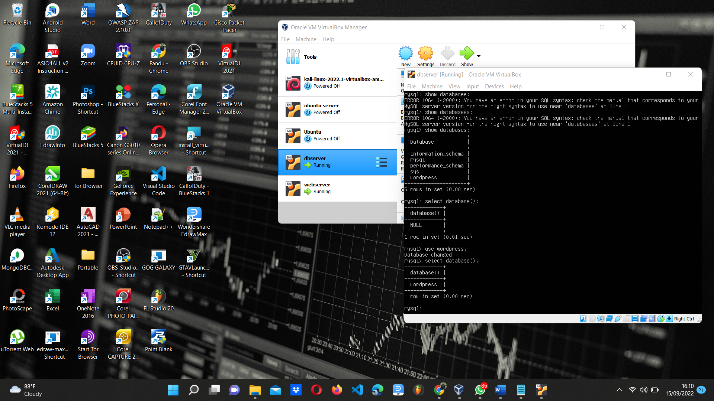

15 september 2022
•Masuk Ke-root
•ap-get update
•apt full-upgrade
•apt install apache2
•apt install php8
•apt install mysql-server
•apt install wordpress
TUGAS 2. Membuat Database • Create user

•Membuat Nama Database
•Membuat Tabel DataBase
TUGAS 3. Query mysql sleep,select,union• Perintah SELECT pada MySQL adalah perintah yang digunakan untuk menampilkan data dari tabel yang ada di database dan dapat juga menjadi sebuah ekspesi.
• Fungsi UNION pada SQL digunakan untuk menggabungkan dua tabel dalam bentuk baris baru ke bawah dimana field yang di-SELECT antara tabel satu dan lainnya adalah harus sama. Atau sederhananya yaitu untuk menempatkan baris dari kueri satu sama lain dan nilainya distinct/unik.
• Dan yang diatas itu adalah salah,karena salah perintah. perintah yang benar ada di bawah ini
• MySQL menyediakan klausa LIMIT yang digunakan untuk menentukan jumlah record yang akan ditampilkan. Selain menentukan jumlah record yang ditampilkan, Klausa LIMIT juga dapat dipadukan dengan OFFSET untuk memudahkan membuat paging halaman, terutama sangat berguna pada tabel dengan jumlah record yang besar.